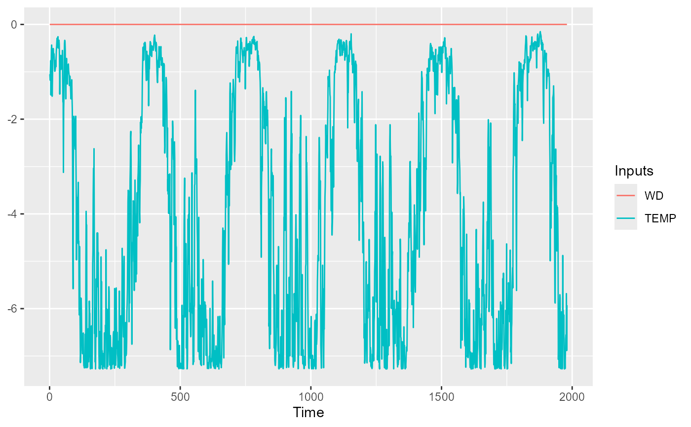

Plot of sensitivity of the neural network output respect to the inputs over the time variable from the data provided
Usage
SensTimePlot(
object,
fdata = NULL,
date.var = NULL,
facet = FALSE,
smooth = FALSE,
nspline = NULL,
...
)Arguments
- object
fitted neural network model or
arraycontaining the raw sensitivities from the functionSensAnalysisMLP- fdata
data.framecontaining the data to evaluate the sensitivity of the model. Not needed if the raw sensitivities has been passed asobject- date.var
Posixct vectorwith the date of each sample offdataIfNULL, the first variable with Posixct format offdatais used as dates- facet
logicalifTRUE, functionfacet_gridfromggplot2is used- smooth
logicalifTRUE,geom_smoothplots are added to each variable plot- nspline
integerifsmoothis TRUE, this determine the degree of the spline used to performgeom_smooth. Ifnsplineis NULL, the square root of the length of the timeseries is used as degrees of the spline.- ...
further arguments that should be passed to
SensAnalysisMLPfunction
Value
list of geom_line plots for the inputs variables representing the
sensitivity of each output respect to the inputs over time
References
Pizarroso J, Portela J, Muñoz A (2022). NeuralSens: Sensitivity Analysis of Neural Networks. Journal of Statistical Software, 102(7), 1-36.
Examples
## Load data -------------------------------------------------------------------
data("DAILY_DEMAND_TR")
fdata <- DAILY_DEMAND_TR
fdata[,3] <- ifelse(as.data.frame(fdata)[,3] %in% c("SUN","SAT"), 0, 1)
## Parameters of the NNET ------------------------------------------------------
hidden_neurons <- 5
iters <- 250
decay <- 0.1
################################################################################
######################### REGRESSION NNET #####################################
################################################################################
## Regression dataframe --------------------------------------------------------
# Scale the data
fdata.Reg.tr <- fdata[,2:ncol(fdata)]
fdata.Reg.tr[,3] <- fdata.Reg.tr[,3]/10
fdata.Reg.tr[,1] <- fdata.Reg.tr[,1]/1000
# Normalize the data for some models
preProc <- caret::preProcess(fdata.Reg.tr, method = c("center","scale"))
#> Warning: These variables have zero variances: WD
nntrData <- predict(preProc, fdata.Reg.tr)
#' ## TRAIN nnet NNET --------------------------------------------------------
# Create a formula to train NNET
form <- paste(names(fdata.Reg.tr)[2:ncol(fdata.Reg.tr)], collapse = " + ")
form <- formula(paste(names(fdata.Reg.tr)[1], form, sep = " ~ "))
set.seed(150)
nnetmod <- nnet::nnet(form,
data = nntrData,
linear.output = TRUE,
size = hidden_neurons,
decay = decay,
maxit = iters)
#> # weights: 21
#> initial value 2518.847637
#> iter 10 value 1980.676972
#> iter 20 value 1863.605952
#> iter 30 value 1714.408226
#> iter 40 value 1702.860135
#> iter 50 value 1697.085071
#> iter 60 value 1696.693269
#> iter 70 value 1696.690378
#> final value 1696.690265
#> converged
# Try SensTimePlot
NeuralSens::SensTimePlot(nnetmod, fdata = nntrData, date.var = NULL)
#> Warning: Use of `plotdata$value` is discouraged.
#> ℹ Use `value` instead.
#> Warning: Use of `plotdata$variable` is discouraged.
#> ℹ Use `variable` instead.
#> Warning: Use of `plotdata$variable` is discouraged.
#> ℹ Use `variable` instead.
